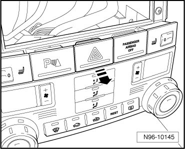
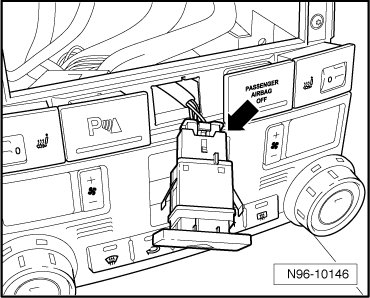

Center Instrument Panel Switch
Instrument Panel Lamps and Switches
Center Instrument Panel Switch
The same procedure is used to remove and install the following components. The procedure is only described for one component.
• Driver's Heated Seat Adjuster (E94)
• Front Passenger's Heated Seat Adjuster (E95)
• Emergency Flasher Switch (E3)
• Parking Aid Button (E266)
• Front Passenger's Airbag Disabled Indicator Lamp (K145)
CAUTION!
When removing and installing components in visible area (switches, covers, trim, etc.), cover by taping the areas at which a prying tool (plastic wedge, screwdriver) will be positioned using commercially available adhesive tape.
Removing
- Switch off ignition, switch off all electrical consumers and remove ignition key.
- In vehicles without radio/navigation system or radio, pry cover (radio cut-out) from mounts.
- If necessary, remove radio.
- If necessary, remove radio/navigation system.
- Press switch out of installation frame from behind.

- Release and disconnect the connector - arrow -.

Installing
Install in reverse order of removal.